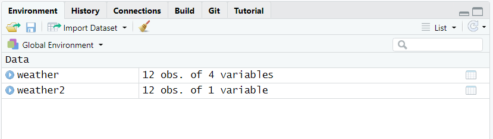

Name: Aud Halbritter
Position: Researcher
Institution: UiB
-----------------------------
Name: Jonathan Soule
Position: Senior Engineer
Institution: UiB
-----------------------------
Name: Richard J. Telford
Position: Associate Professor
Institution: UiB
-----------------------------7 Importing data in R
R can import data from files in many different formats. For example:
- csv files with the
readrpackage - excel files with the
readxlpackage - xlm files with the
xml2package - netcdf files with the
ncdf4package - shapefiles with the
sfpackage
In this chapter, you will learn how to import tabular data from an external text file as a tibble. We will use functions from the package readr which is part of the tidyverse package, so make sure that you have activated it with library(tidyverse).
Before we start
You must be familiar with tibbles and data types (such as numeric, character, etc).
7.1 What are tabular data?
Tabular data are data that is organized in the form of a table with rows and columns. A table often has a header, i.e. an additional row that displays variable names. Here is an example of a formatted table with header:
Table 7.1: ?(caption)
| month | temperature (Celsius) | precipitation (mm) | Wind (m/s) |
|---|---|---|---|
| January | -3.4 | 29.4 | 1.3 |
| February | -0.4 | 15.4 | 0.9 |
| March | -1.7 | 57.6 | 1.7 |
| april | 3.8 | 3.2 | 0.8 |
| May | 5.1 | 25.2 | 1.4 |
| June | 10.6 | 52.4 | 1.1 |
| July | 13.1 | 65.0 | 1.0 |
| August | 12.8 | 67.4 | 0.7 |
| September | 6.9 | 79.0 | 1.2 |
| October | 2.5 | 18.2 | 0.8 |
| November | -2.2 | 7.8 | 0.8 |
| December | 1.5 | 92.0 | 1.5 |
In this example, the table consists of 4 variables (columns) and 12 observations (rows) in addition to the header (top row). All cell contents are clearly delimited.
Below is an example of a non-tabular dataset. This dataset is a list of profiles with recurrent fields (Name, Position, Institution). Each profile contains three lines with a field:value pair.
7.2 About tidy data
Sooner or later, you will read about tidy data which is a standard, consistent way to organize tabular data in R. Briefly, tidy data follows a short series of rules:
- each variable in the data set is presented in a specific column,
- each observation in the data set is presented in a specific row,
- each cell at the intersection of a row and a column contains a single value.
The following figure illustrates well these rules.

The dataset presented in Table 7.1 respects all three rules, and is thus a tidy dataset.
On the contrary, the following dataset is not tidy:
Warning: One or more parsing issues, see `problems()` for detailsIndeed, at least one of the rules is broken since columns display data matching several variables (Date, time, Weather, etc).
Importing data from a file containing tidy data is a great way to start your work, but it is not a prerequisite to data import. As long as your data is tabular, you will be able to import it in R, and later you will have the chance to tidy it (see Chapter 9).
7.3 File formats
Tabular data may be stored in files using various formats, spreadsheets, etc. The most common spreadsheets store data in their own, proprietary file format, e.g. MS Excel which produces .xls and .xlsx files. Such formats may be a limitation to data management in R. Simpler formats such as plain text files with .txt or .csv should always be preferred when saving or exporting data from spreadsheets.
7.3.1 The CSV format
One of the most common format for storing tabular data in plain text files is CSV, which stands for Comma-Separated Values. It is this format that we are going to deal with here. Note that CSV-formatted files often have (but not always) a .csv extension. They may also have a .txt extension.
In a CSV-formatted file, the data is stored in a similar manner to this:

For information, this file matches the example in Table 7.1. Each line corresponds to a row in the table (including header) and cell contents are separated with a comma ,. Note that the period symbol . is used as decimal separator.
The use of commas in the CSV format is however not universal. Other symbols such as a semi-colon ; may be used as a delimiter. This is the case in several European countries where commas are decimal separator. Here is the same data set as above, this time in the European format:

Finally, you should know that there exist other delimiter-separated formats, in which delimiters like | or tabs (coded as \t) replace commas.
7.4 Know your data!
There are several reasons why different symbols are used in CSV files. Among these reasons are:
- locale, i.e. the parameters that define the language and regional settings (currency, time and date, number format setting) in use on your machine,
- software-based preferences, the settings which are defined by default by the software that you have used to punch your data,
- user-based preferences, the settings that you choose when punching or saving data.
It is thus very important to know what your CSV file is made of. We therefore recommend to systematically inspect your data file before importing in R. One way to do it is to open the file with read_lines('file.txt') (the n_max argument is useful if there is lots of data) and determine:
- which symbol is used as decimal separator (
,or.) - which symbol is used as delimiter (
,or;) - any extra lines of data that need removing
Here is our previous example:
read_lines('data/weather.csv') [1] "month,temperature (Celsius),precipitation (mm),Wind (m/s)"
[2] "January,-3.4,29.4,1.3"
[3] "February,-0.4,15.4,0.9"
[4] "March,-1.7,57.6,1.7"
[5] "april,3.8,3.2,0.8"
[6] "May,5.1,25.2,1.4"
[7] "June,10.6,52.4,1.1"
[8] "July,13.1,65.0,1.0"
[9] "August,12.8,67.4,0.7"
[10] "September,6.9,79.0,1.2"
[11] "October,2.5,18.2,0.8"
[12] "November,-2.2,7.8,0.8"
[13] "December,1.5,92.0,1.5" In this file, the decimal separator is . and the delimiter is ,.
7.5 Import with readr
readr comes with several functions that read data files. Among them are:
read_delim()read_csv()read_csv2()read_table()
We will focus essentially on read_delim() as it is a general function that can import all the formats. read_csv() and read_csv2() are more specific functions which are preset to import CSV-formatted files in which a comma , or a semi-colon ; is defined as delimiter, respectively. read_delim() reads white-space delimited files.
7.5.1 read_delim()
read_delim() is a simple function that does several things at once. First, it finds and reads the file to import. Then it looks at the first 1000 rows of the file and guesses the number of variables and rows, and the data type for each variable. Finally, it displays the data as a tibble keeping track of the order of both the columns and rows, and the nature of the data.
The function does not automatically store the data after reading the file. This is why the tibble produced by read_delim() must be assigned to an object using <-.
read_delim() has two main mandatory arguments:
-
file = " "which defines where to find the data file, -
delim = " "which defines the symbol used as delimiter.
When searching for the file, R/RStudio uses the location of the current RStudio project as a root. As a consequence, you may simply write the file name if the file is in the same folder as your .Rproj file. Alternatively, write [subfolder]/[filename] if the file is in a subfolder. For more info about RStudio projects, read section Chapter 3.
In the following example, we import the file weather.csv located in the subfolder data of the current RStudio project into the object weather. In weather.csv, the delimiter is , and the decimal separator is .
weather <- read_delim(file = "data/weather.csv",
delim = ",")Rows: 12 Columns: 4
── Column specification ────────────────────────────────────────────────────────
Delimiter: ","
chr (1): month
dbl (3): temperature (Celsius), precipitation (mm), Wind (m/s)
ℹ Use `spec()` to retrieve the full column specification for this data.
ℹ Specify the column types or set `show_col_types = FALSE` to quiet this message.When the function is executed, the console shows a short series of warnings and messages. In the frame above, the message Column specification tells you that the content of the column month has been recognized as of data type character, and that the three other columns have been recognized as double (which is similar to numeric).
Now the tibble weather is available in R as you may see in the tab Environment (see Figure 7.1).

You can display the table as follows:
weather# A tibble: 12 × 4
month `temperature (Celsius)` `precipitation (mm)` `Wind (m/s)`
<chr> <dbl> <dbl> <dbl>
1 January -3.4 29.4 1.3
2 February -0.4 15.4 0.9
3 March -1.7 57.6 1.7
4 april 3.8 3.2 0.8
5 May 5.1 25.2 1.4
6 June 10.6 52.4 1.1
7 July 13.1 65 1
8 August 12.8 67.4 0.7
9 September 6.9 79 1.2
10 October 2.5 18.2 0.8
11 November -2.2 7.8 0.8
12 December 1.5 92 1.57.5.1.1 Choose the right delimiter
The example above is rather straight forward, but you may experience some issues depending on the content of the CSV file. Relatively often, one tries to import CSV files wrongly assuming that , has been used as a delimiter. Here is what happens when doing this assumption for a file (weather2.csv) where ; was in fact used as delimiter:
weather2 <- read_delim(file = "data/weather2.csv",
delim = ",")Warning: One or more parsing issues, see `problems()` for detailsRows: 12 Columns: 1
── Column specification ────────────────────────────────────────────────────────
Delimiter: ","
chr (1): month;temperature (Celsius);precipitation (mm);Wind (m/s)
ℹ Use `spec()` to retrieve the full column specification for this data.
ℹ Specify the column types or set `show_col_types = FALSE` to quiet this message.The message Column specification tells you that the content of the whole CSV file has been transferred into one single column named month;temperature (Celsius);precipitation (mm);Wind (m/s) and recognized as of data type character. Accordingly, the object weather2, now visible in the tab Environment (see Figure 7.2), is described as a tibble with 12 observations and only one variable.

The content of the resulting tibble is as follows:
weather2# A tibble: 12 × 1
`month;temperature (Celsius);precipitation (mm);Wind (m/s)`
<chr>
1 January;-3,4;29,4;1,3
2 February;-0,4;15,4;0,9
3 March;-1,7;57,6;1,7
4 april;3,8;3,2;0,8
5 May;5,1;25,2;1,4
6 June;10,6;52,4;1,1
7 July;13,1;65,0;1,0
8 August;12,8;67,4;0,7
9 September;6,9;79,0;1,2
10 October;2,5;18,2;0,8
11 November;-2,2;7,8;0,8
12 December;1,5;92,0;1,5 This shows how important it is to review the data before importing it. A quick check with read_lines('data/weather2.csv') would have revealed the use of ; as delimiter in weather2.csv, and you would have certainly used the follow code to import it.
weather2 <- read_delim(file = "data/weather2.csv",
delim = ";")Rows: 12 Columns: 4
── Column specification ────────────────────────────────────────────────────────
Delimiter: ";"
chr (2): month, Wind (m/s)
ℹ Use `spec()` to retrieve the full column specification for this data.
ℹ Specify the column types or set `show_col_types = FALSE` to quiet this message.Here, the message Column specification tells you that the content of the columns month and Wind (m/s) has been recognized as of data type character, and that the two other columns have been recognized as number. While read_delim() got things right about the number of variables, something went wrong with the variables as we could expect Wind (m/s) to be recognized as double. To find out about this issue we need to review the imported data in the object weather2 and compare it to the original file weather2.csv.
7.5.1.2 Review the imported data
The example above shows the importance of carefully verifying that the imported data in R matches the original data set. The following figure compares the content of the file weather2.csv (Figure 7.3 left) to the content of the object weather2 (Figure 7.3 right):

Looking at the rows in both pictures, one can understand that all commas have simply been ignored, excepted those in the last column. This is a problem that may occur when the decimal separator used in the file is different from the decimal separator defined by your system (a.k.a locale). To solve that issue, you must impose the separator using locale = locale(decimal_mark = ","):
weather3 <- read_delim(file = "data/weather2.csv",
delim = ";",
locale = locale(decimal_mark = ","))Rows: 12 Columns: 4
── Column specification ────────────────────────────────────────────────────────
Delimiter: ";"
chr (1): month
dbl (3): temperature (Celsius), precipitation (mm), Wind (m/s)
ℹ Use `spec()` to retrieve the full column specification for this data.
ℹ Specify the column types or set `show_col_types = FALSE` to quiet this message.The last column is now recognized as double and the data in the object weather3 matches the data in the file:

7.5.2 read_csv()
As we have seen in the section above, read_delim() can read CSV files where , and ; are used as delimiters. readr also comes with other functions such as read_csv() and its twin read_csv2(). These are “clones” of read_delim() where the argument delim = is preset to delim = "," and delim = ";", respectively. Thus, the only argument that is strictly required is file = " " to determine the path of the file.
Here are two examples. The first one shows the use of read_csv():
weather_csv <- read_csv(file = "data/weather.csv")Rows: 12 Columns: 4
── Column specification ────────────────────────────────────────────────────────
Delimiter: ","
chr (1): month
dbl (3): temperature (Celsius), precipitation (mm), Wind (m/s)
ℹ Use `spec()` to retrieve the full column specification for this data.
ℹ Specify the column types or set `show_col_types = FALSE` to quiet this message.The resulting tibble looks correct:
weather_csv# A tibble: 12 × 4
month `temperature (Celsius)` `precipitation (mm)` `Wind (m/s)`
<chr> <dbl> <dbl> <dbl>
1 January -3.4 29.4 1.3
2 February -0.4 15.4 0.9
3 March -1.7 57.6 1.7
4 april 3.8 3.2 0.8
5 May 5.1 25.2 1.4
6 June 10.6 52.4 1.1
7 July 13.1 65 1
8 August 12.8 67.4 0.7
9 September 6.9 79 1.2
10 October 2.5 18.2 0.8
11 November -2.2 7.8 0.8
12 December 1.5 92 1.5The second one shows the use of read_csv2():
weather_csv2 <- read_csv2(file = "data/weather2.csv")ℹ Using "','" as decimal and "'.'" as grouping mark. Use `read_delim()` for more control.Rows: 12 Columns: 4
── Column specification ────────────────────────────────────────────────────────
Delimiter: ";"
chr (1): month
dbl (3): temperature (Celsius), precipitation (mm), Wind (m/s)
ℹ Use `spec()` to retrieve the full column specification for this data.
ℹ Specify the column types or set `show_col_types = FALSE` to quiet this message.Note the message above Column specification that indicates which symbols read_csv2() has considered when importing the data. The resulting tibble looks correct:
weather_csv2# A tibble: 12 × 4
month `temperature (Celsius)` `precipitation (mm)` `Wind (m/s)`
<chr> <dbl> <dbl> <dbl>
1 January -3.4 29.4 1.3
2 February -0.4 15.4 0.9
3 March -1.7 57.6 1.7
4 april 3.8 3.2 0.8
5 May 5.1 25.2 1.4
6 June 10.6 52.4 1.1
7 July 13.1 65 1
8 August 12.8 67.4 0.7
9 September 6.9 79 1.2
10 October 2.5 18.2 0.8
11 November -2.2 7.8 0.8
12 December 1.5 92 1.57.5.3 White space delimited files
Some files have white space separating the columns. If a single tab is used then read_delim() will work with delim = "\t". Sometimes multiple spaces are used so the columns line up, making the text file easy for humans to read. read_delim() will not work with these files as it expects a single delimiter. Instead we can use read_table().
read_table(" Species Value
Navicula 1
Cymbella 2")# A tibble: 2 × 2
Species Value
<chr> <dbl>
1 Navicula 1
2 Cymbella 2Another type of data you will sometimes see is the fixed width format. There are no delimiters, but each field has the same position in each row. These files can be imported with read_fwf(). Determining the position of each column can be painful unless you have good metadata.
Exercise
Download the Mt Gonga plant biomass data and import it.
Hint
read_delim
7.5.4 Useful arguments
read_delim() and the other functions discussed above have a multitude of arguments that allow for adjusting the way data is read and displayed. Here we review a handful of them.
7.5.4.1 n_max
n_max sets a limit to the number of observations to be read. Note that n_max does not consider the first row (header) of the data file as an observation.
weather <- read_delim(file = "data/weather.csv",
delim = ",",
n_max = 6)Rows: 6 Columns: 4
── Column specification ────────────────────────────────────────────────────────
Delimiter: ","
chr (1): month
dbl (3): temperature (Celsius), precipitation (mm), Wind (m/s)
ℹ Use `spec()` to retrieve the full column specification for this data.
ℹ Specify the column types or set `show_col_types = FALSE` to quiet this message.weather# A tibble: 6 × 4
month `temperature (Celsius)` `precipitation (mm)` `Wind (m/s)`
<chr> <dbl> <dbl> <dbl>
1 January -3.4 29.4 1.3
2 February -0.4 15.4 0.9
3 March -1.7 57.6 1.7
4 april 3.8 3.2 0.8
5 May 5.1 25.2 1.4
6 June 10.6 52.4 1.17.5.4.2 skip
The argument skip may be used to skip rows when reading the data file.
Be aware that:
- the header in the original data file counts as one row,
- the first row that comes after those which have been skipped becomes the header for the resulting tibble.
In the following example, we read the data file weather.csv and skip the first row:
weather <- read_delim(file = "data/weather.csv",
delim = ",",
skip = 1)Rows: 11 Columns: 4
── Column specification ────────────────────────────────────────────────────────
Delimiter: ","
chr (1): January
dbl (3): -3.4, 29.4, 1.3
ℹ Use `spec()` to retrieve the full column specification for this data.
ℹ Specify the column types or set `show_col_types = FALSE` to quiet this message.weather# A tibble: 11 × 4
January `-3.4` `29.4` `1.3`
<chr> <dbl> <dbl> <dbl>
1 February -0.4 15.4 0.9
2 March -1.7 57.6 1.7
3 april 3.8 3.2 0.8
4 May 5.1 25.2 1.4
5 June 10.6 52.4 1.1
6 July 13.1 65 1
7 August 12.8 67.4 0.7
8 September 6.9 79 1.2
9 October 2.5 18.2 0.8
10 November -2.2 7.8 0.8
11 December 1.5 92 1.5As expected, the first row (with the header) is skipped, and the data from the observation January have become the header of the tibble. The argument col_names() introduced below will be useful for solving this issue.
7.5.4.3 col_names
The argument col_names may be used to define the name of the variables/columns of the tibble. If you use col_names = TRUE, the first row of the data file defines the name of the variables.
weather <- read_delim(file = "data/weather.csv",
delim = ",",
col_names = TRUE)Rows: 12 Columns: 4
── Column specification ────────────────────────────────────────────────────────
Delimiter: ","
chr (1): month
dbl (3): temperature (Celsius), precipitation (mm), Wind (m/s)
ℹ Use `spec()` to retrieve the full column specification for this data.
ℹ Specify the column types or set `show_col_types = FALSE` to quiet this message.weather# A tibble: 12 × 4
month `temperature (Celsius)` `precipitation (mm)` `Wind (m/s)`
<chr> <dbl> <dbl> <dbl>
1 January -3.4 29.4 1.3
2 February -0.4 15.4 0.9
3 March -1.7 57.6 1.7
4 april 3.8 3.2 0.8
5 May 5.1 25.2 1.4
6 June 10.6 52.4 1.1
7 July 13.1 65 1
8 August 12.8 67.4 0.7
9 September 6.9 79 1.2
10 October 2.5 18.2 0.8
11 November -2.2 7.8 0.8
12 December 1.5 92 1.5If you use col_names = FALSE, the first row of the data file will be the first observation in the resulting tibble, and the variables will be named X1, X2, etc.
weather <- read_delim(file = "data/weather.csv",
delim = ",",
col_names = FALSE)Rows: 13 Columns: 4
── Column specification ────────────────────────────────────────────────────────
Delimiter: ","
chr (4): X1, X2, X3, X4
ℹ Use `spec()` to retrieve the full column specification for this data.
ℹ Specify the column types or set `show_col_types = FALSE` to quiet this message.weather# A tibble: 13 × 4
X1 X2 X3 X4
<chr> <chr> <chr> <chr>
1 month temperature (Celsius) precipitation (mm) Wind (m/s)
2 January -3.4 29.4 1.3
3 February -0.4 15.4 0.9
4 March -1.7 57.6 1.7
5 april 3.8 3.2 0.8
6 May 5.1 25.2 1.4
7 June 10.6 52.4 1.1
8 July 13.1 65.0 1.0
9 August 12.8 67.4 0.7
10 September 6.9 79.0 1.2
11 October 2.5 18.2 0.8
12 November -2.2 7.8 0.8
13 December 1.5 92.0 1.5 col_names = may also be followed by the actual variable names that you want to use. In that case, write col_names = c() and list the names between the parentheses. Be aware that:
- the names that you input will be placed on top of the tibble,
- the header in the original data file will become the first row of the resulting tibble. Here is an example:
weather <- read_delim(file = "data/weather.csv",
delim = ",",
col_names = c("Month", "Temp", "Precip", "Wind"))Rows: 13 Columns: 4
── Column specification ────────────────────────────────────────────────────────
Delimiter: ","
chr (4): Month, Temp, Precip, Wind
ℹ Use `spec()` to retrieve the full column specification for this data.
ℹ Specify the column types or set `show_col_types = FALSE` to quiet this message.weather# A tibble: 13 × 4
Month Temp Precip Wind
<chr> <chr> <chr> <chr>
1 month temperature (Celsius) precipitation (mm) Wind (m/s)
2 January -3.4 29.4 1.3
3 February -0.4 15.4 0.9
4 March -1.7 57.6 1.7
5 april 3.8 3.2 0.8
6 May 5.1 25.2 1.4
7 June 10.6 52.4 1.1
8 July 13.1 65.0 1.0
9 August 12.8 67.4 0.7
10 September 6.9 79.0 1.2
11 October 2.5 18.2 0.8
12 November -2.2 7.8 0.8
13 December 1.5 92.0 1.5 7.5.4.4 col_types
The argument col_types may be used to modify the data type of the variables. This is useful for example when you need to set a variable as factor whereas R has defined it as character. Here is an example with three simple variables.
counts <- read_delim(file = "data/groups.csv",
delim = ",")Rows: 9 Columns: 3
── Column specification ────────────────────────────────────────────────────────
Delimiter: ","
chr (1): group
dbl (2): ID, count
ℹ Use `spec()` to retrieve the full column specification for this data.
ℹ Specify the column types or set `show_col_types = FALSE` to quiet this message.As the message clearly indicates, the first and last variables are recognized as double (i.e. numeric) while the second one is recognized as character. The tibble in the object counts displays as follows:
counts# A tibble: 9 × 3
ID group count
<dbl> <chr> <dbl>
1 1 A 5
2 2 A 3
3 3 A 2
4 4 B 4
5 5 B 5
6 6 B 8
7 7 C 1
8 8 C 2
9 9 C 9Let’s use col_types = cols() to manually set the data types to double, factor and integer, respectively.
counts <- read_delim(file = "data/groups.csv",
delim = ",",
col_types = cols(col_double(), col_factor(), col_integer()))Now the tibble displays like this, with the correct data types for each column:
counts# A tibble: 9 × 3
ID group count
<dbl> <fct> <int>
1 1 A 5
2 2 A 3
3 3 A 2
4 4 B 4
5 5 B 5
6 6 B 8
7 7 C 1
8 8 C 2
9 9 C 9If you only need to modify one or a few variables, you must name it/them when writing the code:
counts <- read_delim(file = "data/groups.csv",
delim = ",",
col_types = cols(group = col_factor()))The tibble displays like this:
counts# A tibble: 9 × 3
ID group count
<dbl> <fct> <dbl>
1 1 A 5
2 2 A 3
3 3 A 2
4 4 B 4
5 5 B 5
6 6 B 8
7 7 C 1
8 8 C 2
9 9 C 9Note that col_types is particularly useful when importing tabular data that includes formatted dates. Dates are usually recognized as character when their format does not match the expected format set as default (locale, etc). In the following example, dates entered as yyyy-mm-dd in the last column are recognized as of type date:
countsdates <- read_delim(file = "data/groups-dates1.csv",
delim = ",")Rows: 9 Columns: 4
── Column specification ────────────────────────────────────────────────────────
Delimiter: ","
chr (1): group
dbl (2): ID, count
date (1): date
ℹ Use `spec()` to retrieve the full column specification for this data.
ℹ Specify the column types or set `show_col_types = FALSE` to quiet this message.However, in the example below, dates entered as dd-mm-yyyy are converted to character:
countsdates <- read_delim(file = "data/groups-dates2.csv",
delim = ",")Rows: 9 Columns: 4
── Column specification ────────────────────────────────────────────────────────
Delimiter: ","
chr (2): group, date
dbl (2): ID, count
ℹ Use `spec()` to retrieve the full column specification for this data.
ℹ Specify the column types or set `show_col_types = FALSE` to quiet this message.To solve this issue, add the function col_date() in cols() to help R understand how dates are formatted and shall be read.
countsdates <- read_delim(file = "data/groups-dates2.csv",
delim = ",",
col_types = cols(date = col_date("%d-%m-%Y")))The result is the following tibble now correctly formatted:
countsdates # A tibble: 9 × 4
ID group count date
<dbl> <chr> <dbl> <date>
1 1 A 5 2021-03-01
2 2 A 3 2021-03-02
3 3 A 2 2021-03-03
4 4 B 4 2021-03-01
5 5 B 5 2021-03-02
6 6 B 8 2021-03-03
7 7 C 1 2021-03-01
8 8 C 2 2021-03-02
9 9 C 9 2021-03-03You will find the whole list of cols() parameters for col_types here.
Exercise
Download the midge data from https://www.ncei.noaa.gov/pub/data/paleo/insecta/chironomidae/northamerica/usa/alaska/alaska2011midge-t.txt and import part “3a. Clegg et al. 2011 Hudson Lake Midge Temperature Data”
Hint
What is the delimiter? Choose an suitableread_*() function skip and n_max argument can be useful.
Further Reading
You may find the following links useful:
Contributors
- Jonathan Soulé
- Aud Halbritter
- Richard Telford